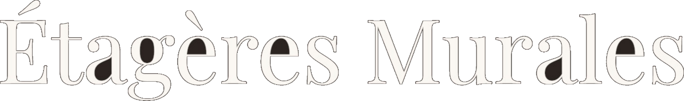

Mur plein
ou creux ?
Le test à faire avant de percer
01 · Le test
Frappez sur le mur
toc
Puis écoutez le son
02 · Son sourd
Son sourd
Mur plein · béton, brique
Chevilles à expansion
03 · Son creux
Son creux
Cloison · plaque de plâtre
Chevilles pour plaque de plâtre
04 · Un doute ?
Le trou d'essai
Ça traverse d'un coup : creux
Ça résiste jusqu'au bout : plein

Une astuce avant chaque pose
etageres-murales.fr